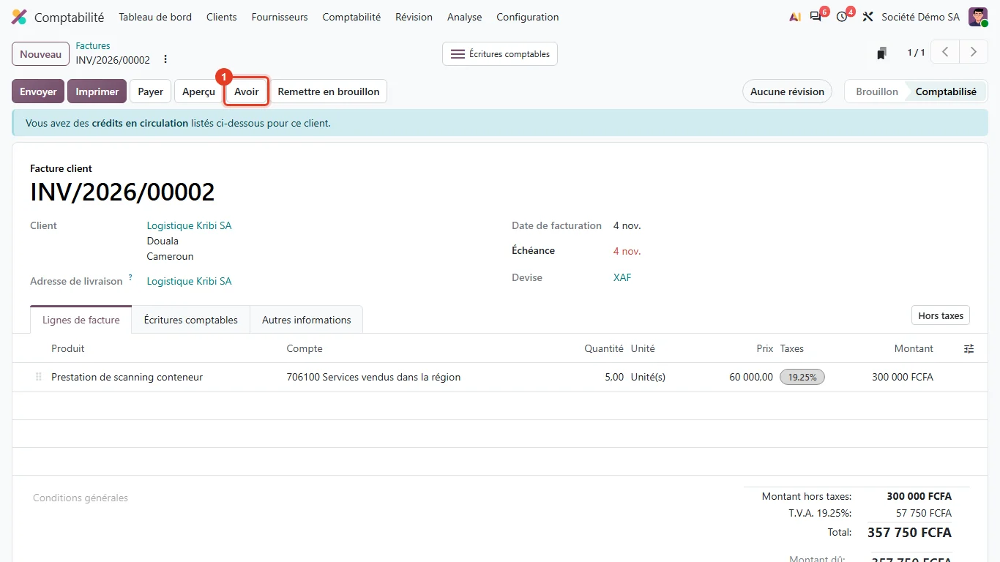
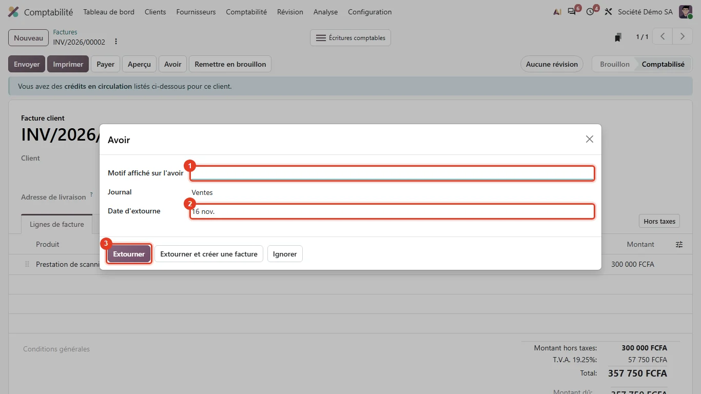

Émettre un avoir et rembourser un client
Objectif. Annuler tout ou partie d'une facture confirmée, puis rembourser ou imputer l'avoir.
Menu Odoo 15Comptabilité > Clients > Factures (bouton Avoir)
Étapes
- Ouvrez la facture confirmée et cliquez sur Avoir (1).
- Indiquez le motif (1) et la date (2) dans la fenêtre.
- Cliquez sur Extourner (3) : l'avoir est créé en brouillon, vérifiez-le puis confirmez-le.
- Pour rembourser : sur l'avoir, cliquez sur Enregistrer un paiement et choisissez la caisse ou la banque.
- Sinon, l'avoir reste en crédit et s'impute sur la prochaine facture du client.


À vérifier
- Le motif de l'avoir est renseigné.
- L'avoir est lettré avec la facture ou avec le remboursement.
À éviter
- Ne remettez pas en brouillon une facture déjà payée ou déclarée en TVA.
Exercice
Émettez un avoir partiel d'une prestation sur une facture, puis remboursez-le en caisse.